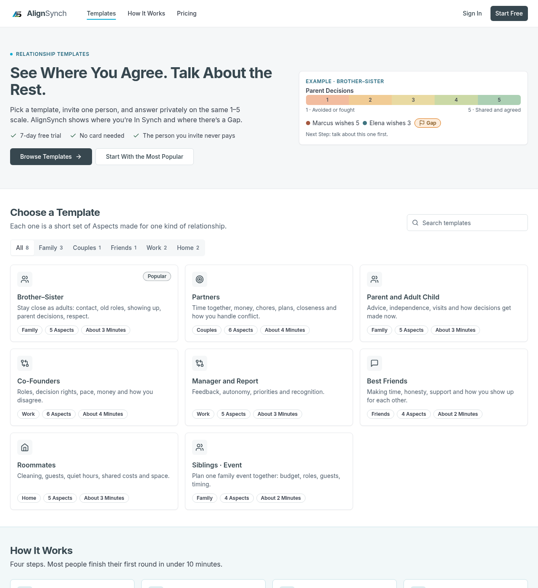
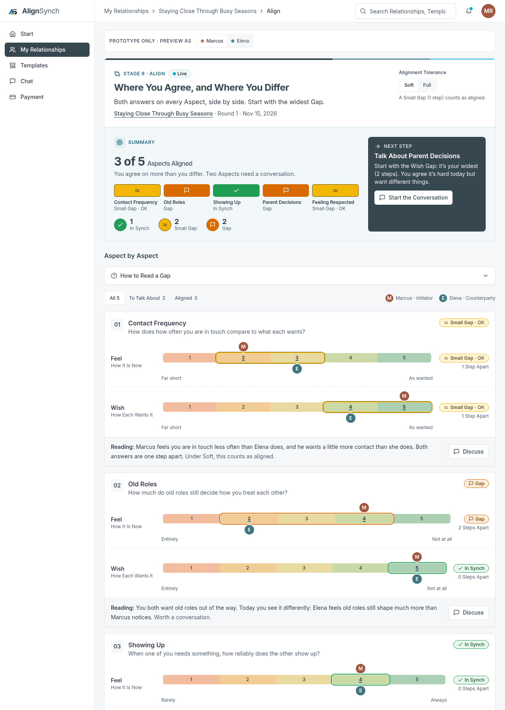
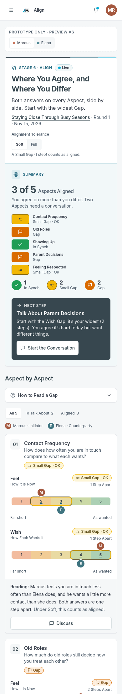

What Is AlignSynch
A calm way for two people to see where they agree, where they don't, and talk it through.
Some conversations are easier when you already know where you stand. AlignSynch gives two people the same short set of questions, called Aspects, and lets each answer privately on a 1–5 scale. When both have answered, Align lays the answers side by side: where you’re In Synch, where there’s a Small Gap, and where there’s a Gap worth talking about. Then you talk it through, right next to the results.
One person starts the relationship (the Initiator). They invite one other person (the Counterparty), who joins in a few clicks and never pays for anything.
At a Glance
| Who it’s for | Two people who want to compare notes on something that matters: siblings, partners, co-founders, friends |
| What you answer | A handful of Aspects from a template, each on the same 1–5 scale |
| Privacy | Neither of you sees the other’s answers until you’ve both answered |
| What you get | Align: every Aspect marked ✓ In Synch, ≈ Small Gap or ⚑ Gap, plus a Next Step to talk about |
| Who pays | Only the Initiator. One plan: Basic, $9.99/month for one relationship, after 7 days free |
| How long it takes | Setup is five short stages; answering takes a few minutes |
How It Works
1. Pick a relationship like yours
Start from a template in the public catalog: Brother–Sister, Partners, Co-Founders and more. Each comes with Aspects already written, and you can change them.

Visitor · Relationship Templates (top of page)
2. Set it up in five stages
Name the relationship (Stage 1), choose how you’ll compare (Stage 2), review the Aspects (Stage 3), create your account (Stage 4), and send the invite (Stage 5). Stage 6, Align, goes live when the other person accepts.
3. Both answer, privately
Each of you answers one Aspect at a time. Answers save as you go, and you can stop and come back.
4. See where you stand, and talk it through
Align shows each Aspect with both answers and its status. The Discussion sits beside it.

Align · desktop

Align · mobile
Good to Know
- Nothing is shared until you both answer. That keeps answers honest.
- Nothing is deleted when things pause. A pause keeps everything readable.
- The other person never pays. They never see a price, a trial or a card.
For the Build Team
Locked rules: one plan, Basic $9.99/month for one relationship · the 7-day trial is chosen on Stage 5 and starts when the Counterparty accepts · trial end pauses Stage 6 with one free Extra Week · the Counterparty never sees a price, trial or card · Delete Account is immediate and can’t be restored · Title Case · status is icon plus word · no red · archive over delete
What’s Built Today (main @ 601ce26, v2.0.0-rc1.2 plus #1235–#1237; each quote is on the cited line)
| Citation | Evidence | What it means |
|---|---|---|
data/pages/pricing.ts:39 |
“The trial begins when the other person accepts. The person you invite never pays.” | The public promise matches the locked trial and Counterparty rules. |
data/pages/invite.ts:148 |
“When you accept, Stage 6 goes live for both of you and your first Assessment opens.” | Stage 6 starts on acceptance. |
data/pages/assessment-answer.ts:44 |
“One Aspect at a time, on the same 1–5 scale both of you answer.” | The answer screen promise. |
data/pages/chat.ts:53 |
”{ id: “chip-synch”, label: “In Synch” }” | The three status words are shared with Chat. |
Open deltas: see each guide. The biggest product-level one: main still sells two plans, Single and Single Annual (data/membership-plans.ts), until PR #1241 (Basic only) merges.
References
| Shot | Source | Original |
|---|---|---|
| relationship-templates-desktop | Bundle 02 (cropped to the top 1400 px) | spec-design-v2-bundles/02-spec-design-page-onboarding-v2/reference/relationship-templates-1280.png |
| align-desktop | Bundle 04 (cropped to the top 1800 px) | spec-design-v2-bundles/04-spec-design-page-align-v2/reference/align-1280.png |
| align-mobile | Bundle 04 (cropped to the top 2200 px) | spec-design-v2-bundles/04-spec-design-page-align-v2/reference/align-390.png |
Bundle shots are the approved 16 Nov renders. No QA capture of the built v2 app exists yet.